C.1 input representation audit
Ten geometry/FEN-reviewed D2 examples; four explicitly provisional D3c examples. These illustrative cases are selected by historical errors, not independent accuracy estimates. Two-branch panels reuse the taller/local and expanded/context arrays. No models were trained or evaluated on changed representations.
D2_king_rook b3 truth=white_king old prediction=white_rook 0.985
D2_human_geometry_and_owner_corrected_FEN. Original timestamp 42.007s. No new inference/training.
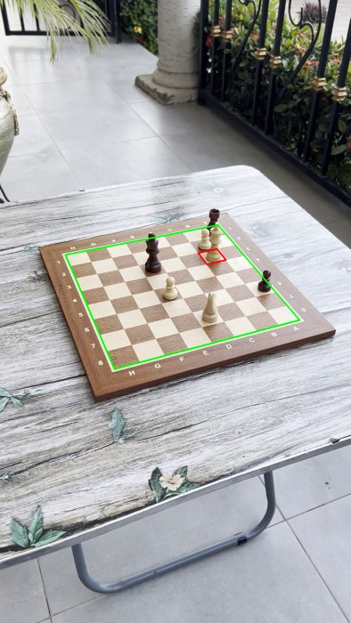
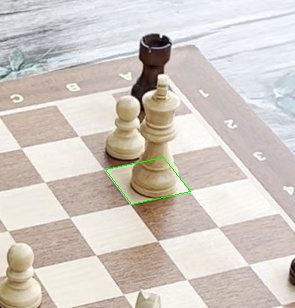
Source board/target and native target neighborhood. Raw annotation window: [505, 610]..[800, 918].
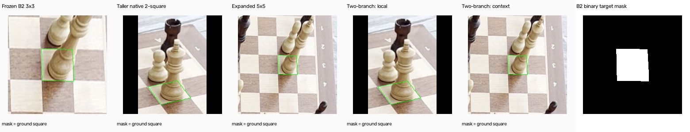
Taller assumption: assumed_pinhole_normal. No calibrated camera pose or piece silhouette is claimed. RGB previews contain display-only outlines; arrays/masks are separately hashed.
D2_king_correct b3 truth=white_king old prediction=white_king 1.000
D2_human_geometry_and_owner_corrected_FEN. Original timestamp 51.007s. No new inference/training.
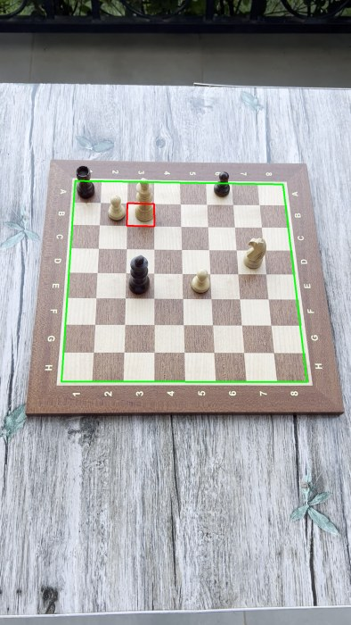
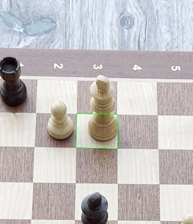
Source board/target and native target neighborhood. Raw annotation window: [237, 395]..[628, 848].
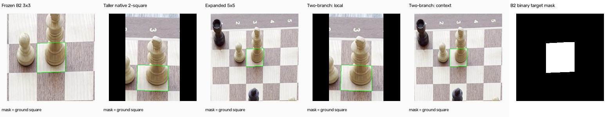
Taller assumption: assumed_pinhole_normal. No calibrated camera pose or piece silhouette is claimed. RGB previews contain display-only outlines; arrays/masks are separately hashed.
D2_knight_rook f3 truth=white_knight old prediction=white_rook 0.997
D2_human_geometry_and_owner_corrected_FEN. Original timestamp 63.010s. No new inference/training.
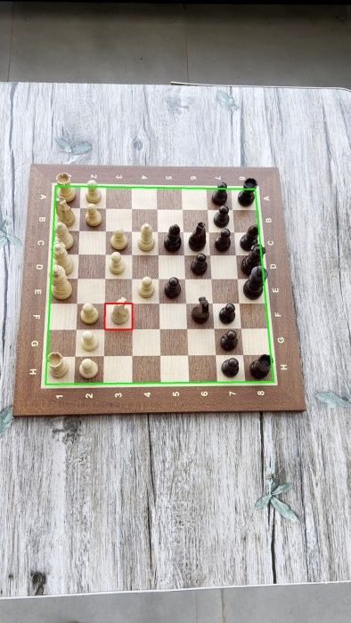
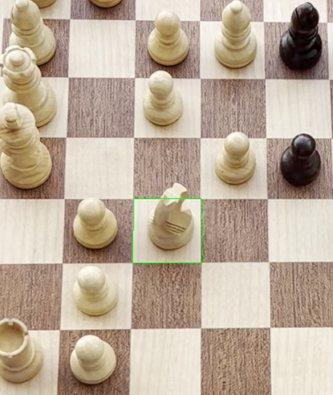
Source board/target and native target neighborhood. Raw annotation window: [157, 688]..[572, 1180].

Taller assumption: assumed_pinhole_normal. No calibrated camera pose or piece silhouette is claimed. RGB previews contain display-only outlines; arrays/masks are separately hashed.
D2_knight_correct f3 truth=white_knight old prediction=white_knight 0.998
D2_human_geometry_and_owner_corrected_FEN. Original timestamp 18.003s. No new inference/training.
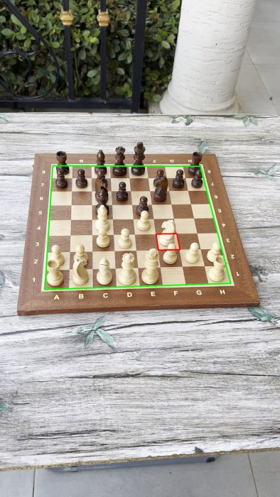
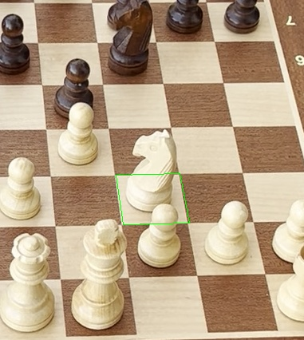
Source board/target and native target neighborhood. Raw annotation window: [457, 685]..[838, 1111].
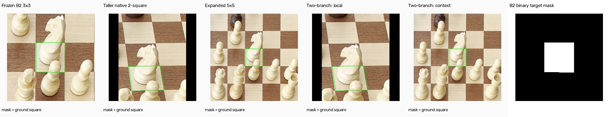
Taller assumption: assumed_pinhole_normal. No calibrated camera pose or piece silhouette is claimed. RGB previews contain display-only outlines; arrays/masks are separately hashed.
D2_black_rook_king f8 truth=black_rook old prediction=black_king 0.712
D2_human_geometry_and_owner_corrected_FEN. Original timestamp 63.010s. No new inference/training.
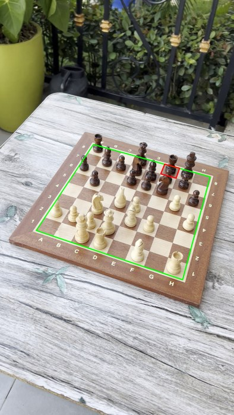
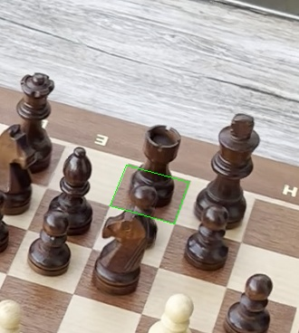
Source board/target and native target neighborhood. Raw annotation window: [621, 577]..[951, 945].

Taller assumption: assumed_pinhole_normal. No calibrated camera pose or piece silhouette is claimed. RGB previews contain display-only outlines; arrays/masks are separately hashed.
D2_black_rook_correct f8 truth=black_rook old prediction=black_rook 0.979
D2_human_geometry_and_owner_corrected_FEN. Original timestamp 27.003s. No new inference/training.
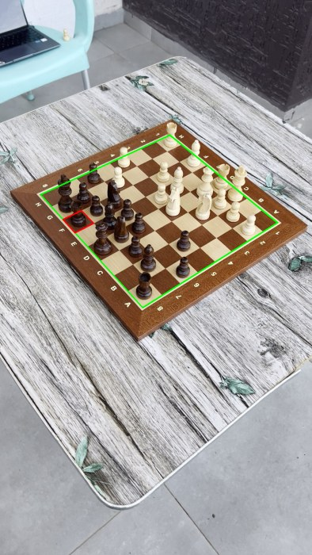
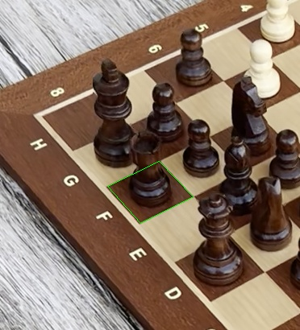
Source board/target and native target neighborhood. Raw annotation window: [85, 528]..[457, 938].
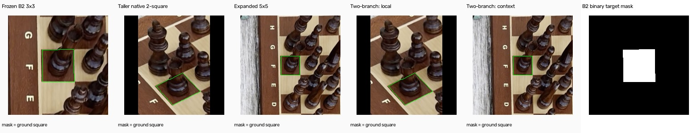
Taller assumption: assumed_pinhole_normal. No calibrated camera pose or piece silhouette is claimed. RGB previews contain display-only outlines; arrays/masks are separately hashed.
D2_empty_rook b1 truth=empty old prediction=white_rook 0.930
D2_human_geometry_and_owner_corrected_FEN. Original timestamp 39.005s. No new inference/training.
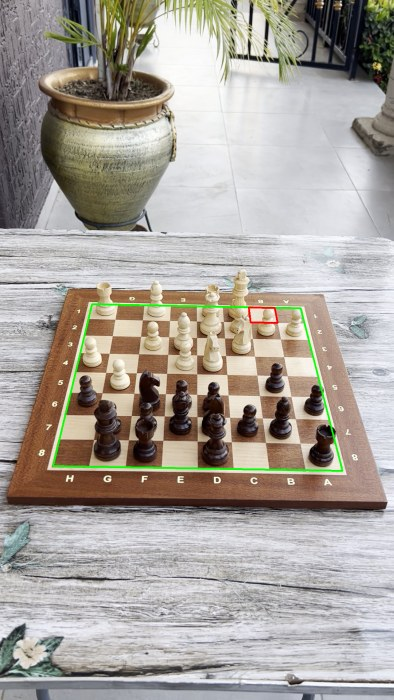
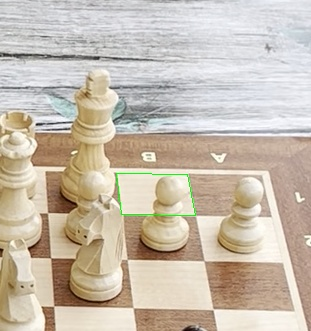
Source board/target and native target neighborhood. Raw annotation window: [566, 670]..[877, 1001].

Taller assumption: assumed_pinhole_normal. No calibrated camera pose or piece silhouette is claimed. RGB previews contain display-only outlines; arrays/masks are separately hashed.
D2_empty_correct b1 truth=empty old prediction=empty 1.000
D2_human_geometry_and_owner_corrected_FEN. Original timestamp 12.002s. No new inference/training.
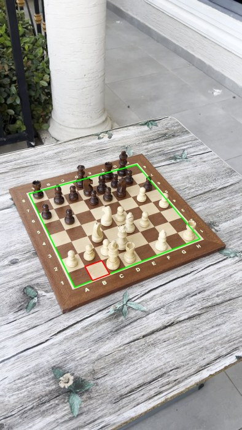
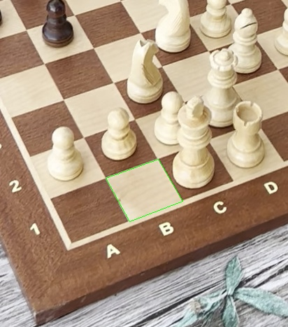
Source board/target and native target neighborhood. Raw annotation window: [228, 936]..[640, 1403].
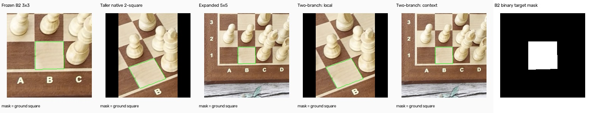
Taller assumption: assumed_pinhole_normal. No calibrated camera pose or piece silhouette is claimed. RGB previews contain display-only outlines; arrays/masks are separately hashed.
D2_pawn_missed h4 truth=white_pawn old prediction=empty 1.000
D2_human_geometry_and_owner_corrected_FEN. Original timestamp 0.000s. No new inference/training.
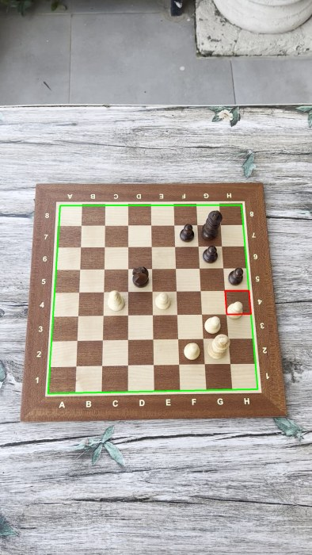
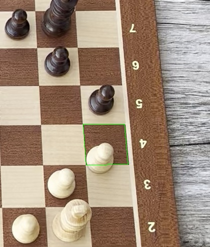
Source board/target and native target neighborhood. Raw annotation window: [613, 757]..[1034, 1252].

Taller assumption: assumed_pinhole_normal. No calibrated camera pose or piece silhouette is claimed. RGB previews contain display-only outlines; arrays/masks are separately hashed.
D2_pawn_correct h4 truth=white_pawn old prediction=white_pawn 0.644
D2_human_geometry_and_owner_corrected_FEN. Original timestamp 51.007s. No new inference/training.
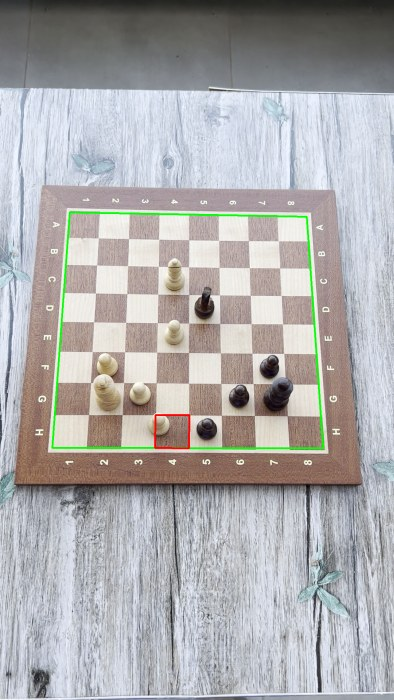
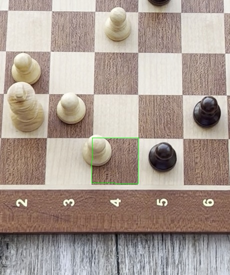
Source board/target and native target neighborhood. Raw annotation window: [242, 863]..[702, 1412].
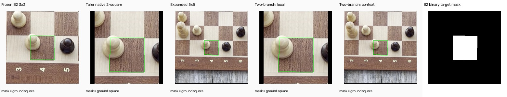
Taller assumption: assumed_pinhole_normal. No calibrated camera pose or piece silhouette is claimed. RGB previews contain display-only outlines; arrays/masks are separately hashed.
D3c_king_rook f3 truth=white_king old prediction=white_rook 0.992
D3c_provisional_geometry_and_supplied_FEN_not_photo_verified. Original timestamp 57.008s. No new inference/training.
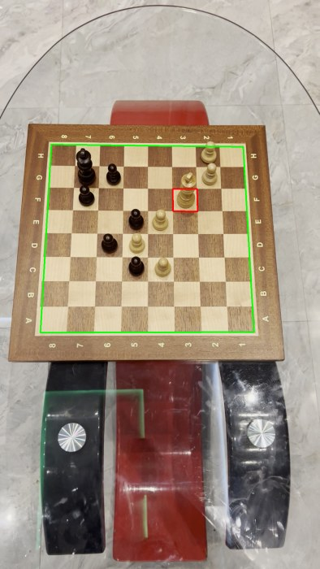
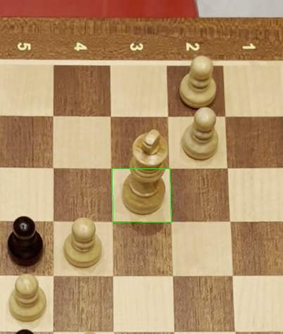
Source board/target and native target neighborhood. Raw annotation window: [424, 398]..[826, 872].
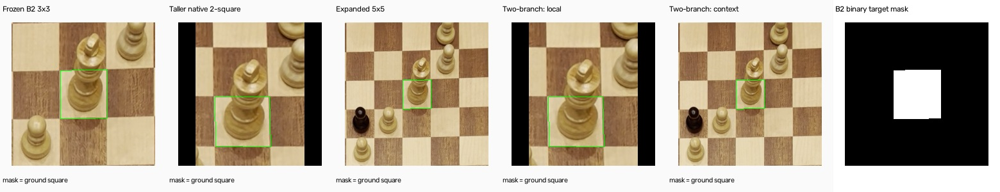
Taller assumption: assumed_pinhole_normal. No calibrated camera pose or piece silhouette is claimed. RGB previews contain display-only outlines; arrays/masks are separately hashed.
D3c_king_correct f3 truth=white_king old prediction=white_king 0.733
D3c_provisional_geometry_and_supplied_FEN_not_photo_verified. Original timestamp 18.003s. No new inference/training.
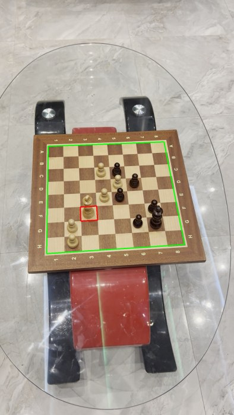
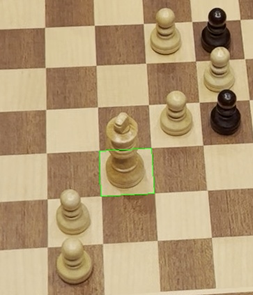
Source board/target and native target neighborhood. Raw annotation window: [229, 741]..[592, 1164].
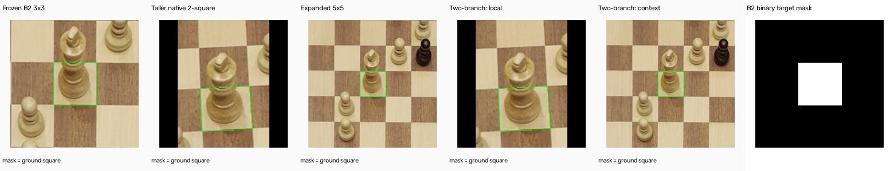
Taller assumption: assumed_pinhole_normal. No calibrated camera pose or piece silhouette is claimed. RGB previews contain display-only outlines; arrays/masks are separately hashed.
D3c_empty_rook h1 truth=empty old prediction=white_rook 1.000
D3c_provisional_geometry_and_supplied_FEN_not_photo_verified. Original timestamp 66.010s. No new inference/training.
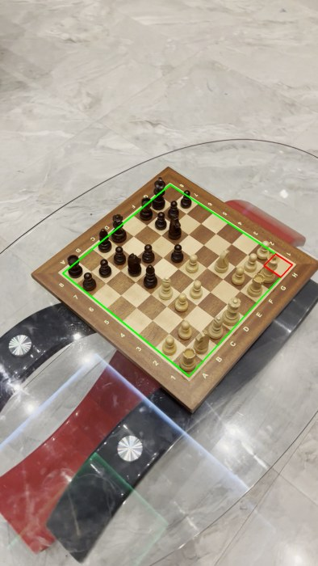
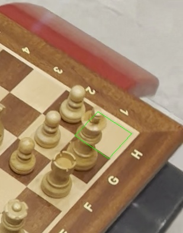
Source board/target and native target neighborhood. Raw annotation window: [771, 673]..[1080, 1066].
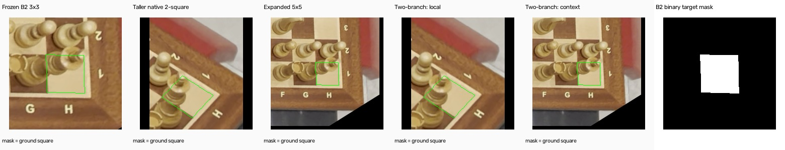
Taller assumption: assumed_pinhole_normal. No calibrated camera pose or piece silhouette is claimed. RGB previews contain display-only outlines; arrays/masks are separately hashed.
D3c_empty_black_rook h1 truth=empty old prediction=black_rook 0.844
D3c_provisional_geometry_and_supplied_FEN_not_photo_verified. Original timestamp 21.003s. No new inference/training.
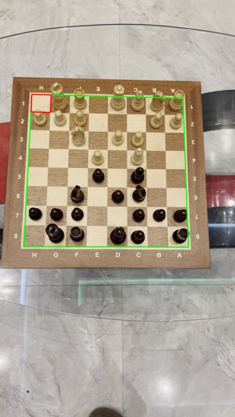
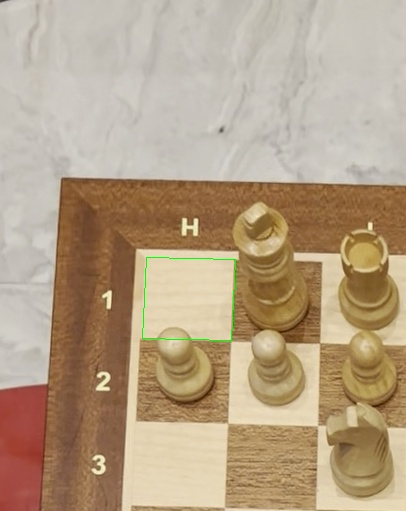
Source board/target and native target neighborhood. Raw annotation window: [0, 177]..[406, 688].
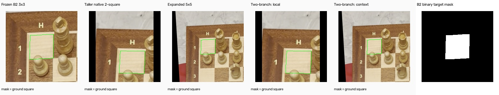
Taller assumption: assumed_pinhole_normal. No calibrated camera pose or piece silhouette is claimed. RGB previews contain display-only outlines; arrays/masks are separately hashed.